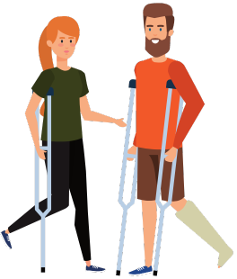

In the aftermath of a disaster or traumatic event, it's common to experience a range of intense emotions, including shock, fear, anger, sadness, and anxiety. These feelings are natural responses to an abnormal and distressing situation. It's crucial to acknowledge and validate your emotions rather than suppress them. Find healthy outlets for expressing your feelings, whether it's through talking to a trusted friend or family member, writing in a journal, or participating in support groups. Remember that everyone copes differently, so honor your own pace and process.
Prioritize self-care practices to nurture your well-being. Engage in activities that bring you comfort and relaxation, such as spending time in nature, practicing mindfulness or meditation, or engaging in creative pursuits. Physical activity can also be an effective way to release tension and improve mood. Make sure to attend to your basic needs, including getting enough sleep, eating nourishing foods, and staying hydrated. Establishing routines can provide a sense of stability and predictability during uncertain times.